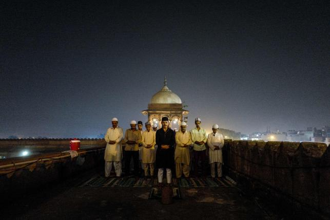

Breaking News


100,000 Rohingyas to be shifted to Bhasanchar soon: PM
UNB . Dhaka | Update: 20:59, May 23, 2018
0Like

Prime minister Sheikh Hasina on Wednesday said some 100,000 displaced Rohingya people, now living in Bangladesh, will be shifted to Bhasanchar Island in Noakhali soon for giving them shelter there until their repatriation. The Prime minister said this when UN Under Secretary General and Executive Director of the United Nations Population Fund (UNFPA) Natalia Kanem met her at her office. PM’s press secretary Ihsanul Karim briefed reporters after the meeting. Sheikh Hasina said some 100,000 Rohingyas will be shifted to Bhashanchar soon as 6,000 people are working there to arrange accommodations for them in the island. She said Bangladesh is a disaster-prone country and the upcoming monsoon may cause untold sufferings to the Rohingyas. “We have taken measures for their temporary shelter in Bhashanchar. They will stay there until their repatriation,” she said. Hasina said Bangladesh has given shelter to the Rohingya people who fled persecutions in Myanmar’s Rakhine state on humanitarian grounds.
Trump to decide about Kim summit next week
AFP . Washington | Update: 09:26, May 24, 2018
0Like

US president Donald Trump said Wednesday the fate of a landmark summit with North Korea’s Kim Jong Un will be decided “next week,” as aides travelled to Singapore on a preparatory mission. “On Singapore we’ll see. It could very well happen,” Trump said of the on-again-off-again 12 June meeting, which has been as keenly teased as any of his “The Apprentice” season finales. “Whatever it is, we’ll know next week.” And in an interview to air Thursday morning on one of the president’s preferred programmes, Fox & Friends, he said “there’s a good chance” the talks would take place. “If that happens, it would be a great thing for North Korea. Listen, it would be a great thing for the world, so we’ll see what happens,” Trump said in the interview, according to excerpts released by Fox. Hand-picked aides—including deputy chief of staff Joe Hagin and deputy national security adviser Mira Ricardel—are travelling to the Southeast Asian city state designated to host the summit, officials said. They are expected to meet their North Korean counterparts and iron out details of the meeting. The top diplomat from Pyongyang’s traditional ally China on Wednesday expressed hope for a successful meeting, as planned. “If you want to solve the moment now is the time, if you want peace now is the time, if you want to make history now is the time,” Chinese foreign minister Wang Yi said in Washington, alongside his American counterpart Mike Pompeo. The US Secretary of State said whether the summit goes ahead is now up to North Korea. Asked in a hearing of the House Foreign Affairs Committee if the summit will take place, Pompeo replied: “That decision will ultimately be up to Chairman Kim.” “He asked for the meeting, the president agreed to meet with him,” Pompeo said. “I’m very hopeful that that meeting will take place.” His remarks reflect an effort to perhaps lay the groundwork for blame should the talks fail. Ostensibly the Trump-Kim talks will be about peace on the Korean peninsula and North Korea’s nuclear and ballistic weapons. But even before talk of test freezes, decommissioning or inspections, Washington and Pyongyang are engaged in a public relations battle. As part of a charm offensive, North Korea invited some foreign journalists to witness the slated destruction of the isolated regime’s nuclear test site. The gesture, which experts agree would do little to curb North Korea’s long-term nuclear capabilities, is meant to signal that the regime is serious about change. Pyongyang said it planned to “completely” destroy the Punggye-ri facility in the country’s northeast when it made the surprise announcement earlier this month. Washington and Seoul welcomed the move.
Asian investors concerned, autos hit by US tariff threat
AFP . Hong Kong | Update: 10:06, May 24, 2018
0Like

Asian markets were mixed Thursday with traders concerned about the China-US trade deal and Donald Trump's summit with Kim Jong Un, while automakers were hit by news Washington was considering huge tariffs on vehicle imports. Investors went into selling mode despite minutes from the Federal Reserve's latest policy meeting that showed the central bank was less hawkish on interest rates than previously thought. The selling is a far cry from the start of the week when equities rallied on news that top officials from China and the United States had agreed to pull back from imposing levies on billions of dollars of goods, averting a potentially damaging trade war. But since Monday's gains, Trump has voiced his displeasure at that agreement and also raised the possibility that a historic summit with North Korean leader Kim on June 12 could be delayed or called off. A key aide to Kim on Thursday hit out at comments from Vice President Mike Pence and warned the talks could be cancelled.
Ramadan around the world
Prothom Alo English Desk | Update: 10:30, May 24, 2018
0Like

Indian Muslim men perform the tarawih special prayer during the Islamic holy month of Ramadaninside the Jama Masjid in the old quarters of New Delhi on 23 May 2018. Like millions of Muslim around the world, Indian Muslims mark the month of Ramadan by abstaining from eating, drinking, and smoking as well as sexual activities from dawn to dusk.


© All Rights Reserved
Prothom Alo 1998 - 2018
Editor & publisher: Matiur Rahman.
CA Bhaban, 100 Kazi Nazrul Islam avenue, Karwan Bazar, Dhaka 1215
Phone: 8180078-81, Fax: 9130496, E-mail: info@prothom-alo.info
Reproduction of any content,
news or article published on this website is
strictly prohibited.Privacy